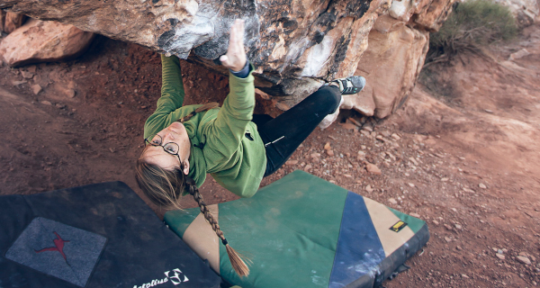

If you like breaking holds and permenantly embuing your clothing with a red hue, Moe's is the place for you

Moe's Classics
This is a newer Moe's boulder. Holds haven't even broken yet
Like many sit starts in Moes, the guidebook is unclear where to start this alleged v10
The rock quality on this climb is actually quite nice
This climb has a name so silly it will not be repeated here
I never thought I could love climbing on rock this bad. It is remarkable. Feeling the grains of sand wear aways is a constant reminder of our own mortality.
-Washed Up Former Climber
Help Save Moe's Valley!
Thanks to the diligent work of the Washington County Sheriffs, Moe's is a pristine desert ecosystem! The only way to save Moe's is to camp in the parking lot!